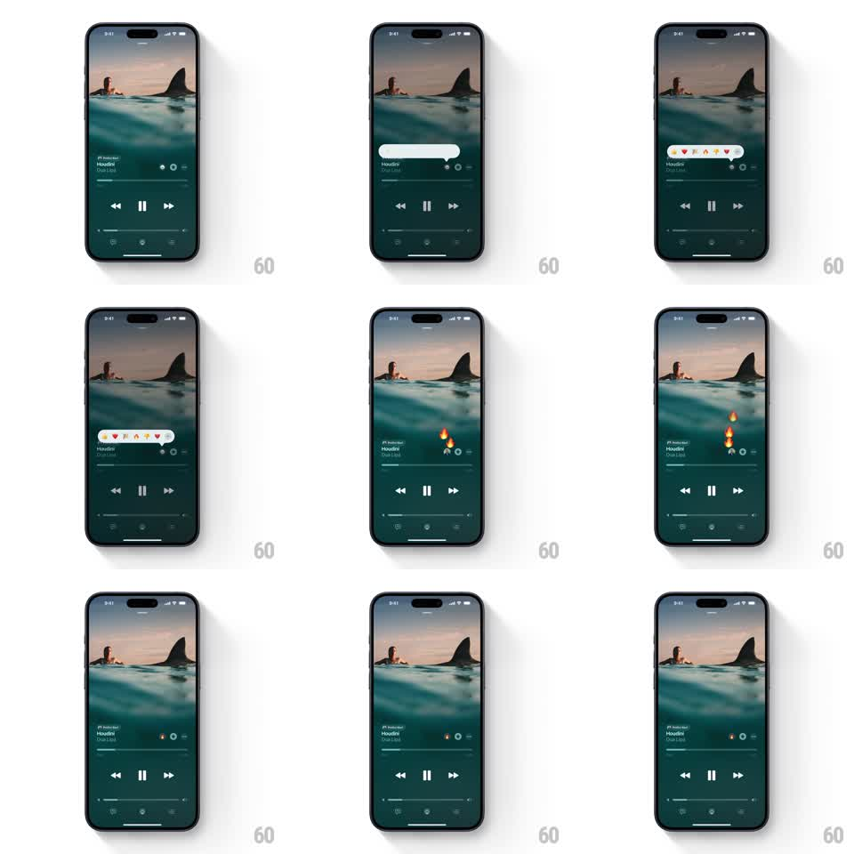

Media
Frame-by-frame

Rebuild this interaction 1:1: Apple Music's emoji reaction - tapping the react control pops open a speech-bubble emoji bar, and the chosen emoji bursts into floating particles that drift up the artwork.

Rebuild this interaction 1:1: Apple Music's emoji reaction - tapping the react control pops open a speech-bubble emoji bar, and the chosen emoji bursts into floating particles that drift up the artwork. ## Integration Integration: stack-agnostic spec - springs given as stiffness/damping, timed motions as duration + curve; map every value to your framework and animation library of choice. ## Scene Dark now-playing screen: full-bleed artwork, track title and artist, transport controls, progress bar, and a small react control in the utility row. ## Motion spec Pattern: popover picker with particle burst, ~1.5s total. - Tap opens the emoji bar: a white speech-bubble pill grows from the react control (scale 0.2 to 1, spring stiffness 380 damping 18, tail anchored at the button), five emojis popping in with 40ms stagger. - Tap an emoji: the bar collapses back into the button (200ms) and the chosen emoji fires as a burst - 5 to 8 copies spawn at the button, each drifting upward with a random lateral wiggle (+-20px sine), scaling down and fading out over ~1.2s. - One copy docks into a small badge beside the track title (spring stiffness 300 damping 15), confirming the reaction. ## Calibration - Particles rise at slightly different speeds (0.9x to 1.3x) so the burst reads as organic, not a cloned row. - The bar's spring overshoot is visible but small (~8%); a hard pop reads as an alert. ## Reduced motion Bar fades in, single emoji crossfades into the badge, no particles. ## Don't miss - The bubble tail points at the react control the whole time it grows - anchored, not centered. - The badge lands only after the burst starts; sequencing sells cause and effect.